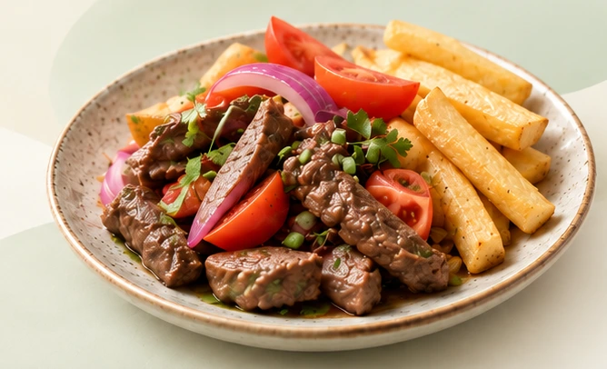

ALIMENTACIÓN INTELIGENTE
PARA TU DÍA A DÍA
Come mejor hoy,
vive mejor siempre.
Encuentra opciones de comida rica en hierro, accesibles y cerca de ti. Mejora tu alimentación de forma simple y práctica.

Buena comida,
más energía
para tus ideas.
Explora alimentos
Busca por precio y distrito.
Conoce las opciones del catálogo.
Mapa interactivo
Descubre opciones
Recetas saludables
Prepara comidas prácticas
y descubre sus ingredientes.
Tu progreso
Registra tu alimentación
y conoce tus hábitos.
PASO A PASO
¿Cómo funciona
Allsumaq?
Te ayudamos a tomar mejores decisiones de alimentación en simples pasos.
- 1
Explora
Busca alimentos
y lugares cercanos. - 2
Conoce
Revisa su información
nutricional y precios. - 3
Elige
Compara y encuentra
una opción para ti. - 4
Registra
Lleva un registro
de tu alimentación.
DESCUBRE OPCIONES EN TU ZONA
Buena comida,
más cerca de ti.
Explora los platos del catálogo.
Precios referenciales y decisiones a tu ritmo.
El presupuesto considera el extremo superior del rango por plato. Los precios sin confirmar y el gasto por persona se excluyen al aplicar ese filtro.
Arrastra para explorar. Usa +/− o las flechas del teclado. Ctrl + rueda para ampliar; en móvil puedes usar dos dedos.
Las universidades son puntos cartográficos de OpenStreetMap. Los establecimientos del catálogo se filtran por distrito; sus direcciones exactas aún están pendientes y no se les asignan marcadores ficticios.
La asociación entre platos y establecimientos procede del catálogo del equipo. Confirma el puesto, la disponibilidad y el precio antes de acudir.
REGISTRO VOLUNTARIO
Lo que comes hoy,
lo puedes recordar.
Lleva un registro sencillo de tus comidas y bebidas.
Tu información se guarda en este navegador.
TU ACTIVIDAD EN ALLSUMAQ
Tus hábitos,
un registro a la vez.
Tu historial de consumo
Entradas que guardaste en este navegador.
TU ESPACIO PERSONAL
Tus preferencias,
tu propia experiencia.
Organiza tus favoritos y elige una zona
para seguir explorando Allsumaq.
Visitante Allsumaq
Explorando como visitanteInicia sesión con Google o sigue explorando sin una cuenta.
Ver mis registrosMis favoritos
Platos que quieres volver a consultar.
Tu información es local
Los favoritos, la zona y los registros permanecen en este navegador. No se envían a un servidor.
Borrar los datos del navegador elimina también tu actividad de esta demostración.